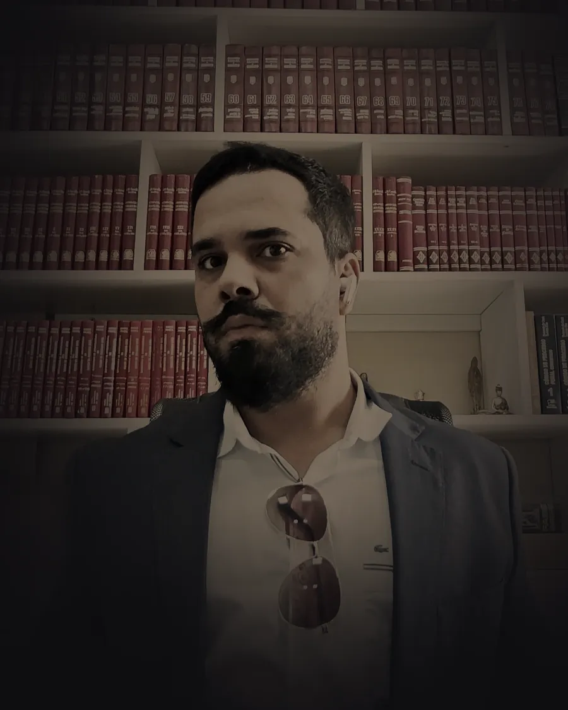

Conexão
Comece pela emoção que você sente agora.
Cada texto parte de uma emoção comum de quem foi acusado ou está no fim de um casamento e diz, com calma, o que fazer a seguir.
Comece por aquiMEDO
- 01MEDODa falsa acusação: o que ele faz com você e o que fazer agora
- 02VERGONHAQuando todo mundo ficou sabendo: o que a vergonha faz com você e o que fazer agora
- 03MEDO DE SER PRESOO que é real, o que é imaginação e o que fazer agora
- 04RAIVADepois da acusação: o que a raiva faz com você e o que fazer antes de responder
- 05CIÚMEE a traição: como os dois decidem um divórcio e o que fazer antes de decidir
- 06INVEJAQuando a vida do outro vira o seu problema: o que a inveja faz com você e o que fazer agora
- 07PÂNICONas primeiras horas depois da intimação ou da medida protetiva: o que fazer agora
- 08SOLIDÃOQuando os amigos sumiram: o que a solidão faz com você e o que fazer agora
- 09CULPAO que é seu e o que jogaram em você: como separar e o que fazer agora
- 10APATIAQuando falta força para tudo: o que a apatia faz com você e o primeiro passo para sair dela
- 11RECOMEÇODepois do processo: como decidir quem você vai ser e o que fazer agora
- 01COMO GUARDAR AS CONVERSASAntes que sumam: cópia de segurança, mídia original e nada editado
- 02AS CÂMERAS APAGAM EM POUCOS DIASImagens do prédio, da loja ou da rua: como pedir a tempo e pelos caminhos certos
- 03MEU CELULAR MOSTRA ONDE EU ESTAVALocalização, horário e linha do tempo: o que guardar dos seus registros e quando pedir à Justiça
- 04TESTEMUNHASQuem viu o quê: como fazer a lista, o que não fazer com elas e quando a medida protetiva proíbe contato
- 05CADEIA DE CUSTÓDIAO caminho da prova digital, da coleta ao laudo, e o que a defesa pode conferir
Uma pausa na travessia
Fonte da Vida
Toque a água da fonte. Uma passagem das Escrituras vem à luz da lamparina.
Os textos orientam de forma geral e não substituem a análise do seu caso por um advogado de sua confiança.